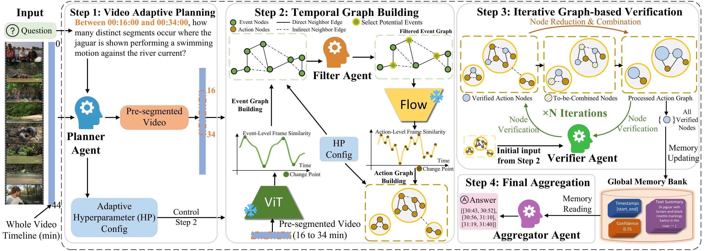

Count
How many distinct events meet the query?
CoMET-Bench + CoMET-Agent
Conditional Multi-Event Temporal Grounding in Long-Form Video
Search a long video for every event that meets your conditions. Return the count—and the timestamps that support it.
Between 16:00 and 34:00, how many distinct segments show a jaguar swimming against the river current?
3distinct events
Ground-truth examples from the paper and HF dataset; no live model inference.
CoMET-Bench
Conditions can span time, space, and identity. The benchmark measures whether a model can find all qualifying events, count them, and recognize when none exist.
How many distinct events meet the query?
Where does each event start and end?
Rejection-F1 rewards correct empty answers while penalizing always-empty predictions.
| Source | Videos | Share |
|---|---|---|
| Video-MME | 214 | 35.7% |
| MLVU | 180 | 30.0% |
| CG-Bench | 198 | 33.0% |
| YouTube | 8 | 1.3% |
All 2,789 queries were independently double-annotated; 182 queries required adjudication. The final benchmark contains 15,022 intervals.
CoMET-Bench · real video examples
These panels match the queries and ground-truth intervals shown in Figures 1–2. Select a condition, then click a timestamp to watch the corresponding event.
Between 00:16:00 and 00:34:00, how many distinct segments occur where the jaguar is shown performing a swimming motion against the river current?
Click a timestamp to play its annotated segment.5WIdIs3A9Ok_q001Video on HF ↗Count the number of times a player successfully scores a field goal while a foul is simultaneously committed by the defense, resulting in an 'and-one' play.
Click a timestamp to play its annotated segment.KLaBd-0yCE4_q001Video on HF ↗After the weight reaches 120 LBS, find all the moments that a person wearing sunglasses successfully complete the bench press challenge.
Click a timestamp to play its annotated segment.xre_3dxdhkQ_q004Video on HF ↗Between 00:00:00 and 00:10:00, count the number of times the video cuts from a clip of the TV show back to the speaker in the blue suit sitting in front of the camera.
Click a timestamp to play its annotated segment.mzvHYBgD-tI_q003Video on HF ↗Identify and ground the moments in the video where the reported events are influenced by the U.S.–Iran conflict.
Click a timestamp to play its annotated segment.7NNAw_zvvOc_q002Video on HF ↗Between 00:00:00 and 00:05:00, how many times does a male adult enter the room to take care of the baby?
0175_surveil_23_q003Video on HF ↗Conditions follow the released query metadata. Videos stream from the HF example directory; the first negative example is a context preview, not a matching event.
CoMET-Agent
The Planner Agent interprets the query, selects graph settings, and narrows the search to any explicitly bounded time window.

Grounding results
Structured search improves over single-pass inference across three evaluated backbones. Select a model to compare the reported results.
CoMET-Bench · positive queries · F1@tIoU 0.5 (%) · main-results table
Fine-grained entity tracking, uniform retrieval across long videos, and pairing causes with their consequences remain open challenges.
+6.1percentage points
Reported benchmark values, not live measurements.
Completed runs supersede the earlier partial results. F1 is evaluated on positive queries; rejection metrics include the negative-query subset. Adapted methods retain their search pipeline and change terminal output formatting.
| Method | Backbone | F1@0.5 ↑ | Rej.-F1 ↑ | FPR ↓ |
|---|---|---|---|---|
| T*-adapted | GPT-4o | 1.4 | 34.3 | 0.0 |
| Vgent-adapted | Qwen2.5-VL | 2.0 | 48.5 | 5.4 |
| TimeSearch-R | Qwen2.5-VL | 5.0 | 26.1 | 83.7 |
| CoMET-Agent | Qwen3-VL | 8.8 | 57.4 | 8.0 |
| Method | Backbone | Seconds / query |
|---|---|---|
| CoMET-Agent | Qwen3-VL | 21.9 |
| CoMET-Agent | Qwen2.5-VL | 27.5 |
| TimeSearch-R | Qwen2.5-VL | 49.1 |
| Vgent-adapted | Qwen2.5-VL | 87.0 |
| CoMET-Agent | GPT-4o | 21.3 |
| T*-adapted | GPT-4o | 207.8 |
| VideoARM | GPT-4.1 / o3 | 287.2 |
Reported wall-clock times follow the hardware and API setups in the paper; these are not hardware-normalized algorithmic speedups. CoMET-Agent uses DINOv2 ViT-L/14.
Explore the work
Methods, evaluations, and analysis. Current public version on arXiv.
Hugging FaceDataset card, files, annotation schema, and access information.
GitHubBenchmark evaluation code is available. The full CoMET-Agent implementation is not released.
This work was supported in part by a gift from Qualcomm. This work also used the Delta system at the National Center for Supercomputing Applications, which is supported by the National Science Foundation under Award No. OAC-2005572, through allocations CIS260306 and CIS250828 from the Advanced Cyberinfrastructure Coordination Ecosystem: Services & Support (ACCESS) program. ACCESS is supported by the U.S. National Science Foundation under Grants No. 2138259, 2138286, 2138307, 2137603, and 2138296.
The authors thank Francisco Arisso, Ayaan Khan, David Orjuela, Harshitha Sathees Kumar, and Jeremy Triana for their contributions to the annotation of the data.